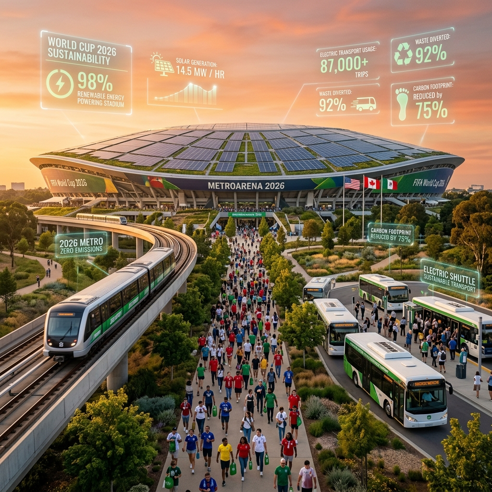

Not a takedown of good engineering — Lenovo's digital twins and FIFA's Football AI Pro are real, useful systems. Here's specifically where they stop, and where SYNAPSE keeps going.
The Operational Intelligence Agent rolls every venue into a single live organizer view — with a plain-language "why" behind every decision.
| Capability | Digital-twin dashboards | Generic GenAI copilot | SYNAPSE |
|---|---|---|---|
| Works when the stadium network collapses | No — cloud-dependent | No — cloud-dependent | Yes — on-device edge mesh |
| Specialized reasoning per function | Single monitoring model | One general-purpose model | 8 purpose-built agents |
| Personalized accessibility journeys | Static accommodations | Reactive Q&A only | Opt-in Fan Twin per need |
| Dynamic volunteer / staff dispatch | Fixed roster | Not addressed | Real-time swarm dispatch |
| Explainable, auditable decisions | Raw metrics only | Black-box responses | Plain-language "why" trace |
| Sustainability as a live incentive | Reported after the fact | Not addressed | Real-time personalized nudges |
| Cross-venue federated learning | Siloed per venue | Not addressed | Shared learning, private data |
| Life after the tournament | Tournament-specific build | Tournament-specific build | Designed for city handoff |
This reflects our design intent and publicly reported capabilities of existing tournament technology as of mid-2026, not a claim about any specific vendor's future roadmap.

Lower-impact transit choices become tangible in the moment — priority security lanes, transit credit, merchandise discounts. The Sustainability Agent turns a press-release metric into something a fan experiences at the gate.
Sustainability dashboards at mega-events are usually built for a press release. The Sustainability Agent instead runs a live loop: it estimates each fan's trip footprint from real transit and rideshare data, and turns lower-impact choices into something tangible in the moment — not a statistic six months later.
Priority security lane + digital transit credit
Partial credit + preferred drop-off zone
Sixteen host cities will have upgraded transit networks, security frameworks, and stadium infrastructure long after the trophy is lifted. SYNAPSE is architected so the same agents and edge mesh can hand off to city transit authorities and venues for concerts, other sports, and future events — the investment outlives the tournament instead of being decommissioned with it.
The Transit Agent's demand-forecasting model transfers directly to daily commuter routing once the tournament ends.
Crowd dynamics and accessibility routing keep working for concerts, league matches, and civic events year-round.
The federated learning mesh itself becomes reusable infrastructure — the next Olympics or continental championship starts from a trained baseline, not zero.